Source: AVEVA InTouch for System Platform 2023 Training Manual, Module 7, Section 2 + Lab 21 (pages 473–500)
Completing Lab 20 with user-role assignments, then covering Signed Writes concepts and Lab 21 — configuring Secured Write and Verified Write security classifications on agitator attributes and testing them at runtime with multiple user accounts.
Reference: Module 7, Section 2 (pages 473–474)
After creating users and roles, the next step is assigning users to their appropriate roles. The Users page in the Security editor shows all users in the Galaxy and the roles they are assigned to. By default, every new user is associated with the Default role but not the Administrator role. Users can be assigned to more than one role simultaneously.
The Administrator user can log on under any authentication mode (except when security is disabled). When logged on as Administrator on the Galaxy Repository node, you can change any Galaxy user's password without providing the old password.
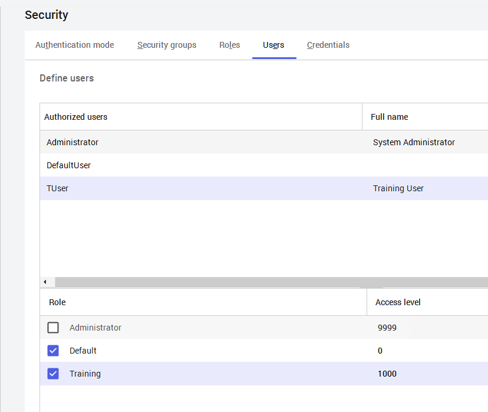
Reference: Module 7, Section 2 (pages 474)
When using the OS Group-based Authentication Mode, each node within the Galaxy must have the same OS Users, Groups, and user-group mappings to ensure consistent access across the deployment. This is because the system maps Windows groups directly to security roles in the Galaxy.
For InTouch access levels, the Roles page includes an Access Level column. Access levels are an InTouch-specific function — in the security model, they only map to InTouch values and have no prioritizing characteristics. The maximum value is 9999 and the minimum is 0. If a user is assigned to multiple roles with different access levels, the higher value is passed to InTouch.
Reference: Module 7, Section 2 (pages 474–476)
Assign Secured Write or Verified Write security classification to a configurable attribute when you need to require authentication before runtime writes can occur. These classifications affect any action that changes the attribute's value — whether through script assignments (like A=B), animation interactions (user inputs, sliders, up/down buttons), or the SignedWrite() script function.
Operators can write to Secured or Verified Write attributes even when another user is logged on — this does not affect the other user's session. However, the operator must have the Can Modify "Operate" Attributes permission, and for Verified Write, the verifier must have Can Verify Writes permission.
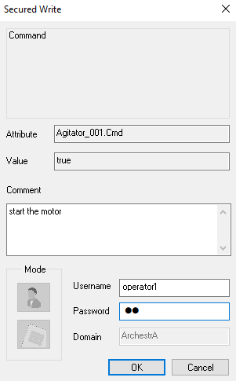
At runtime, the Secured Write or Verified Write dialog boxes appear when an operator attempts to write to a protected attribute. These dialogs include several configurable elements:
SignedWrite() script function can only be used in symbol scripts for attributes configured with Secured Write or Verified Write — not for application object scripts.
After every Secured or Verified Write, a security event is written to the event log that includes the signee name, verifier name (if any), write type, comment, reason description, and the field attribute description. This creates a complete audit trail of all protected write operations.
Reference: Module 7, Lab 21 (pages 477–496)
Steps 1–5. First, close WindowMaker and check in all objects. Open the Security editor (Galaxy > Configure > Security). Select the Default role and configure its Operational permissions: uncheck Default, expand it, and under Alarms, check Can Acknowledge Alarms.
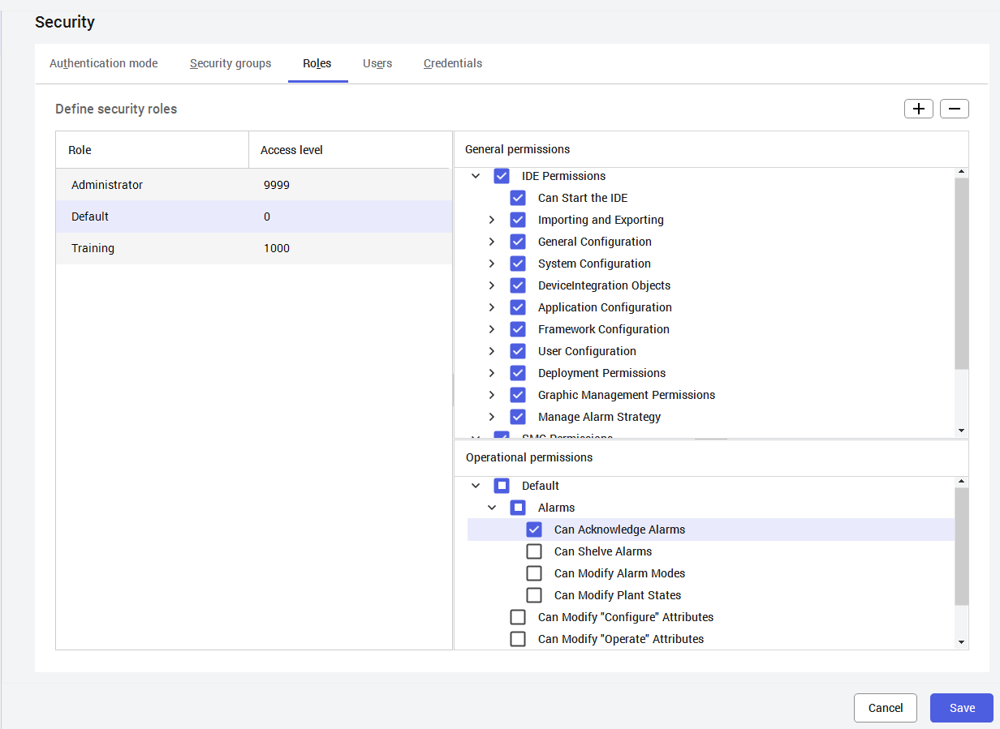
Steps 6–8. Create a new role named Operators with Access level 1000. Under Operational permissions, expand Default and check Can Modify "Operate" Attributes.
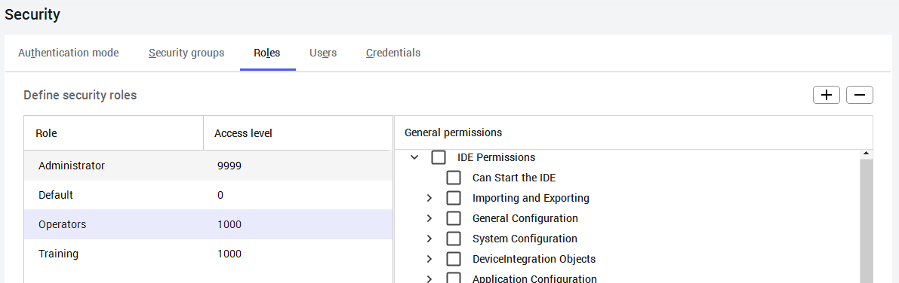
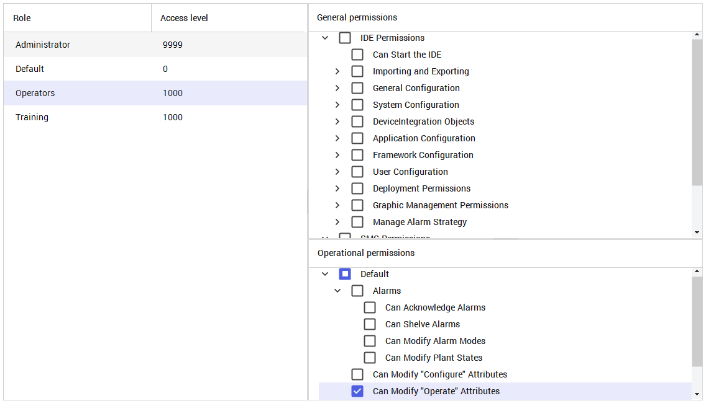
Steps 9–11. Create a Supervisors role with Access level 5000. Enable Can Shelve Alarms, Can Modify Alarm Modes, Can Modify Plant States, and Can Verify Writes.
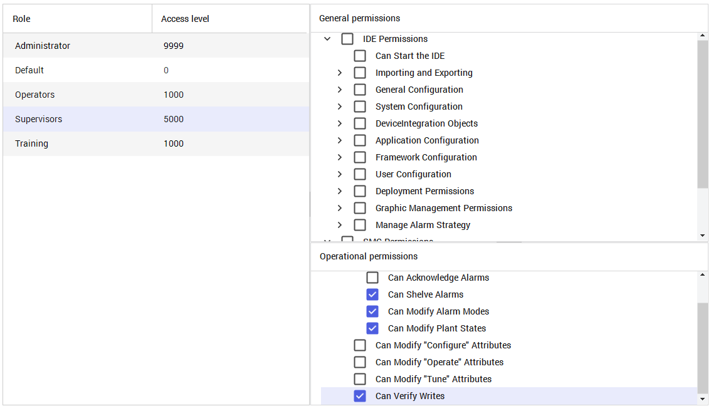
Steps 12–13. On the Users tab, add a new user named Operator1 (Full name: Operator One) and assign the Operators role.
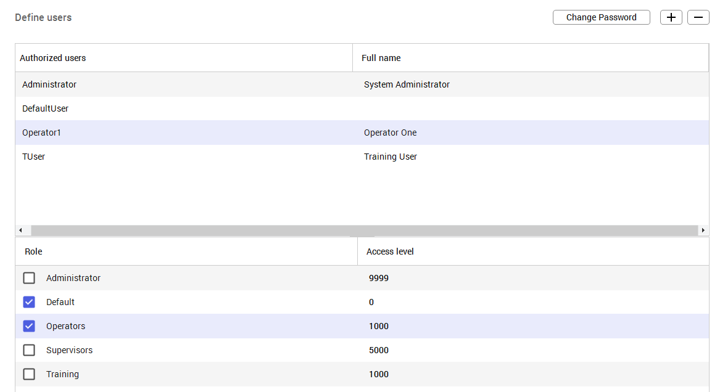
Steps 14–16. Set Operator1's password to ww.
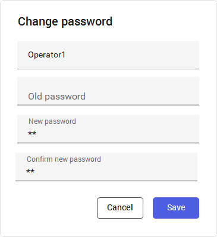
Steps 17–18. Create Operator2 (Operator Two, Operators role, password: ww) and Supervisor1 (Supervisor One, Supervisors role, password: ww).
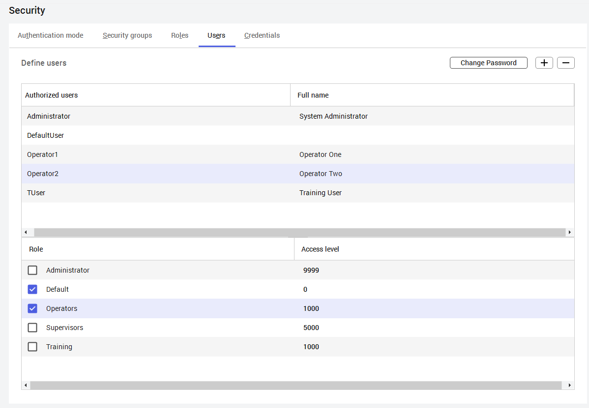
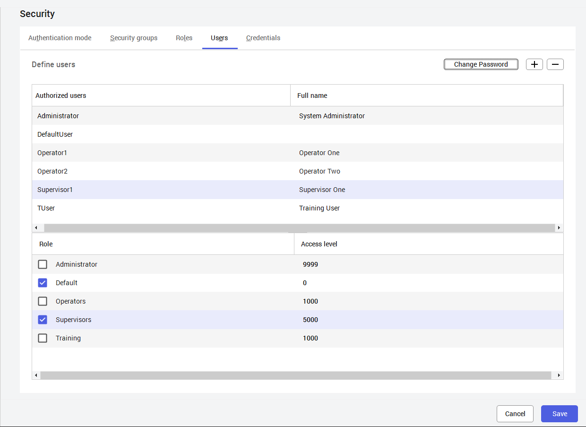
Steps 20–22. Open the $Mixer.Agitator template. Select the Cmd attribute and click the Security Classification icon. Select SecuredWrite.
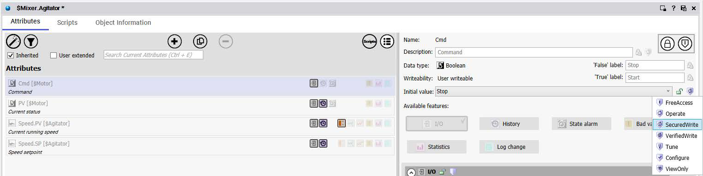
Steps 23–27. Lock the Cmd attribute's initial value to propagate the classification to instances. Then select Speed.SP and set it to VerifiedWrite, and lock it as well. Save, close, and check in the template.
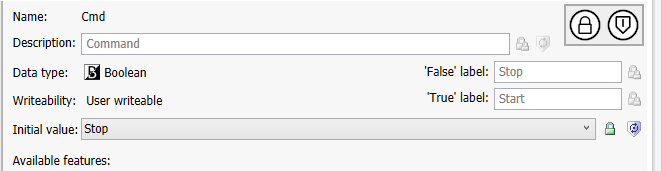
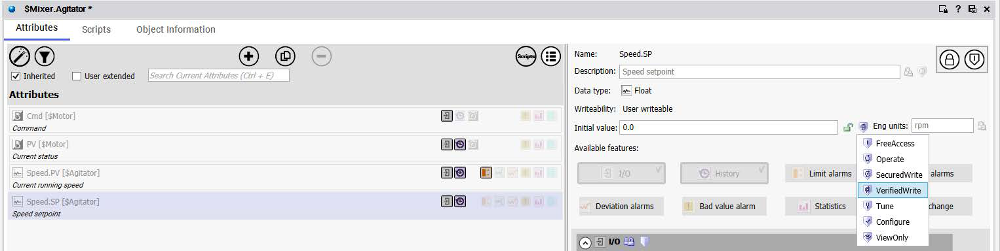
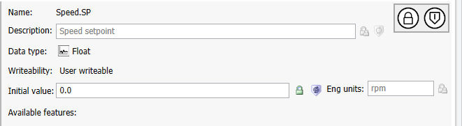
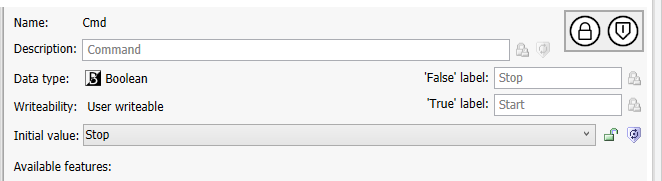
Steps 28–33. Reopen the template, unlock both Cmd and Speed.SP initial values (this allows runtime changes), save, close, and check in.
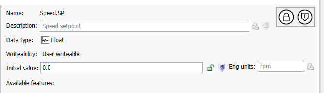
Steps 34–38. In the Derivation view, expand $UserDefined/$Motor/$Agitator/$Mixer.Agitator. The instances show pending deployment changes. Select all eight agitators (Shift+click), right-click and select Deploy.
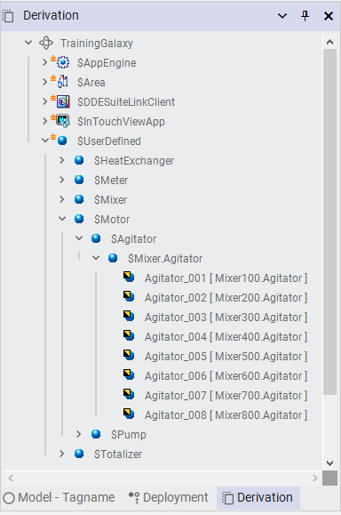
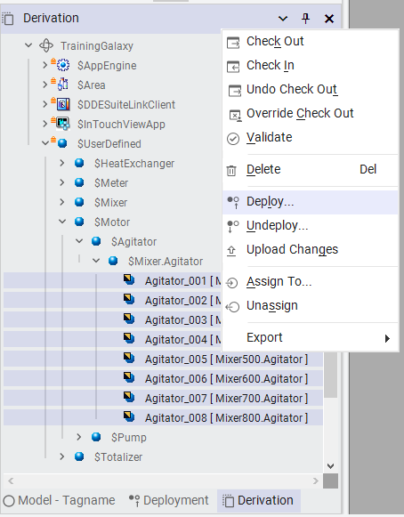
Steps 39–46. Open $MixerView and switch to Runtime. Navigate to Alarm Overview. Attempt to change the Production alarm panel Mode to Disable and click Apply. Because no user is logged in, the operation fails — disabling alarms requires the Can Modify Alarm Modes permission.
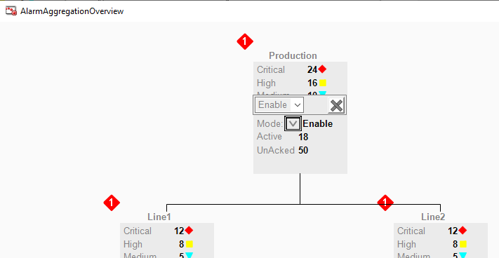
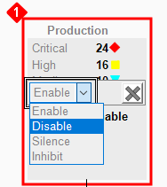
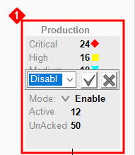
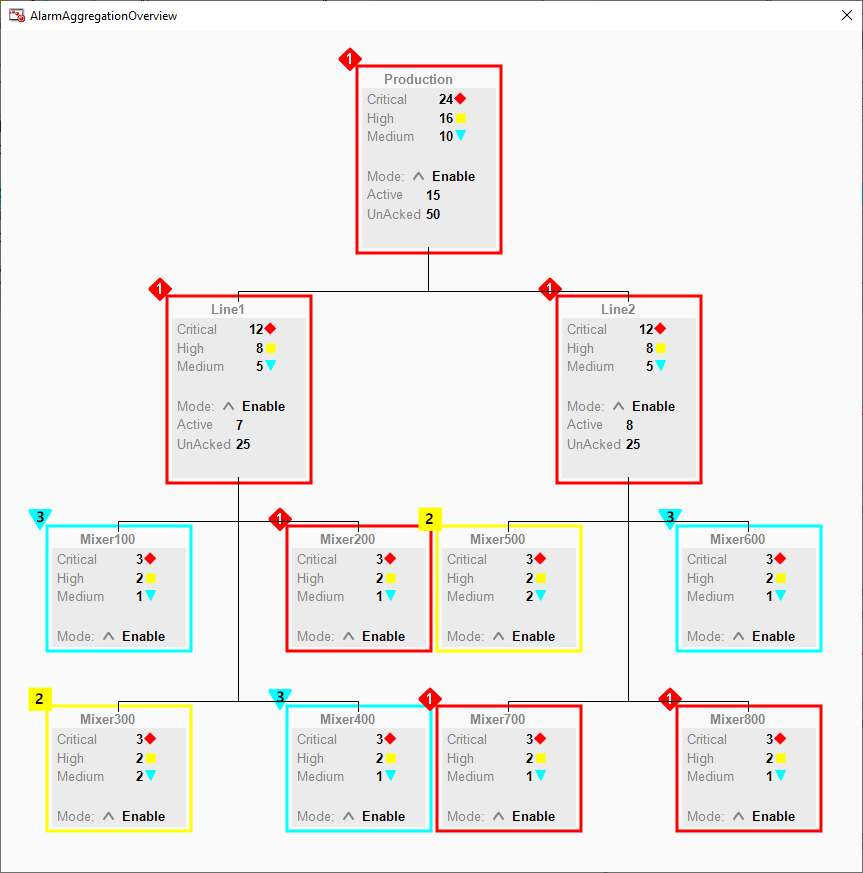
Steps 47–52. Log in as Supervisor1 (password: ww). Navigate back to Alarm Overview, change Mode to Disable, and click Apply. This time, the alarms are successfully disabled because Supervisor1 has the Can Modify Alarm Modes permission.
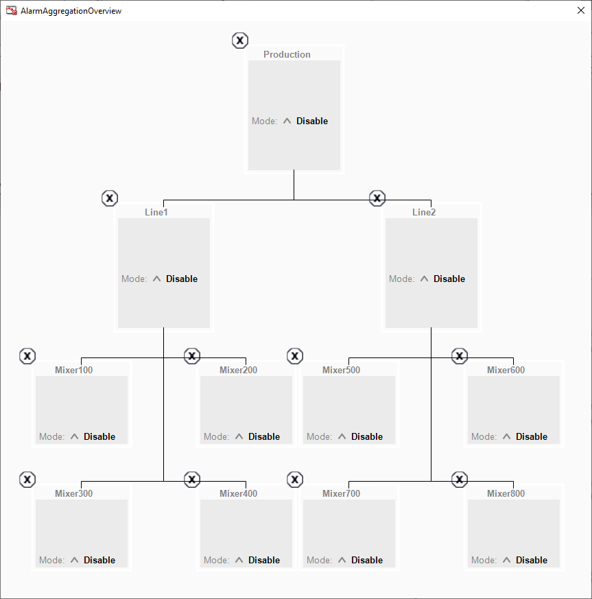
Steps 53–54. Re-enable the alarms using the Production alarm panel, then close AlarmOverview.
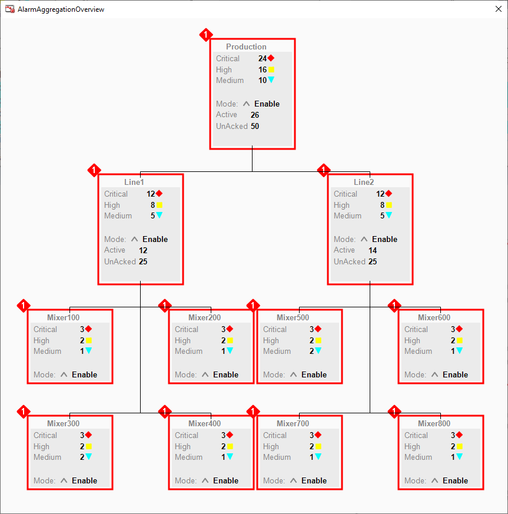
Step 55. In the ContentDisplay window, click Agitator_001 to open its command panel.
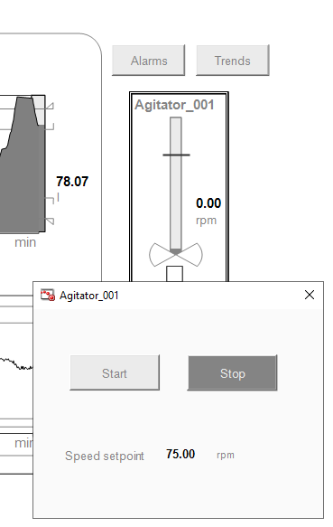
Steps 56–59. Click Start. The Secured Write dialog appears with supervisor1 auto-populated as the username. Enter a comment (e.g., "Attempt to start the motor"), enter password ww, and click OK. The motor starts.
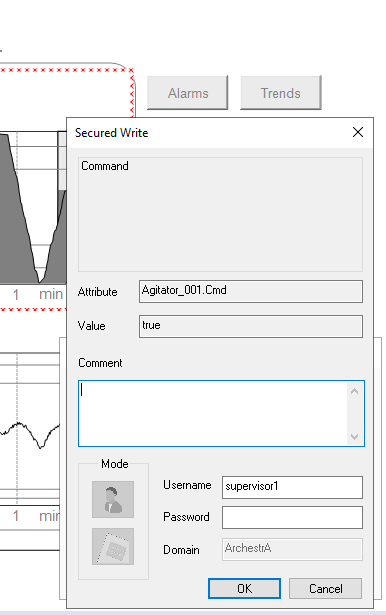
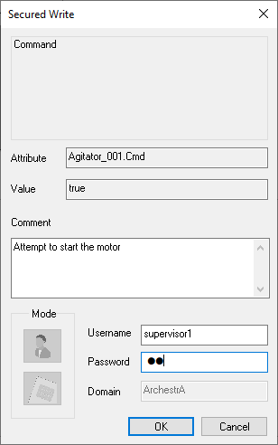
Steps 60–63. Close the panel, log in as Operator1 (password: ww). Attempt to start Agitator_001 via Secured Write. Enter a comment and password, click OK. The motor starts because Operator1 has the Can Modify "Operate" Attributes permission.
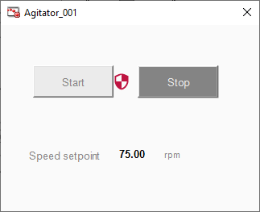
Steps 64–66. Click the Speed setpoint value, enter 25, and press Enter. The Verified Write dialog appears — it requires both an operator and a verifier.
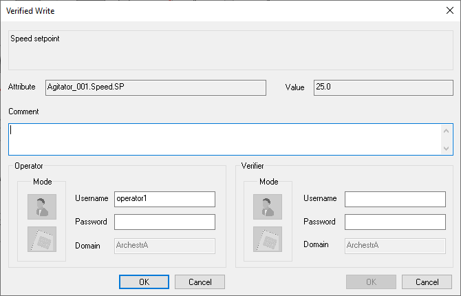
Steps 67–69. Enter a comment, authenticate as Operator1 (operator), then attempt to verify with Operator2 (verifier). The write fails because Operator2 does not have the Can Verify Writes permission.
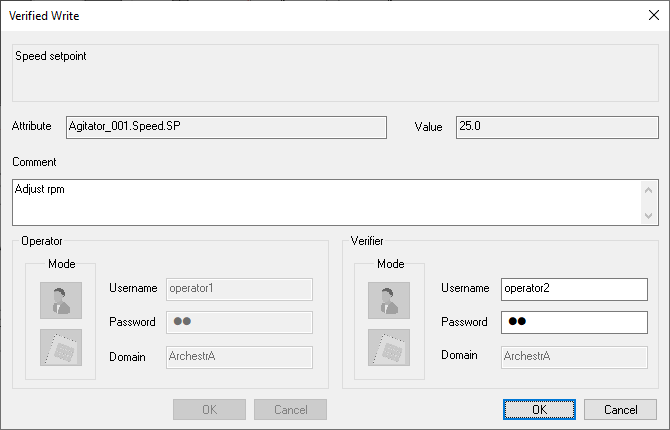
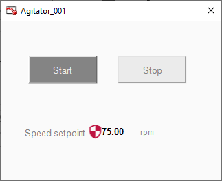
Steps 70–74. Try again, this time using Supervisor1 as the verifier. The write succeeds because Supervisor1 has the Can Verify Writes permission. The speed setpoint updates to 25 rpm.
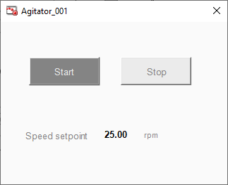
Steps 75–78. Navigate to Historical Alarms and view the Historical Events tab. You will see events for both the successful and denied Secured and Verified Write operations, creating a complete audit trail of the write activity.
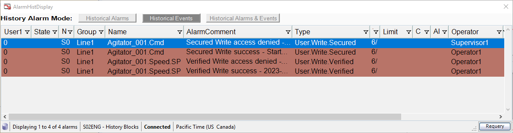
1. In Lab 21, why did the Verified Write operation fail when Operator2 was used as the verifier?
Operator2 only had the Operators role, which grants Can Modify "Operate" Attributes but does not include Can Verify Writes. The verifier must have the Can Verify Writes operational permission, which was only granted to the Supervisors role (assigned to Supervisor1).
2. What happens when a user without the Can Modify Alarm Modes permission tries to disable alarms through the AlarmAggregationOverview?
The operation fails silently — the alarms are not disabled. This was demonstrated when no user was logged in and the Disable command was applied. Only users with the Can Modify Alarm Modes permission (like Supervisor1) can successfully change alarm modes.
3. What is the purpose of locking and then unlocking attribute initial values during the template configuration process?
Locking the initial value propagates the security classification change to all derived instances when deployed. After deployment, unlocking the initial value allows the attribute values to be changed at runtime by authorized users, while the security classification remains in effect.
4. Why must all objects be checked in before security configuration can proceed?
Security configuration affects the entire Galaxy database. If objects are checked out (being edited by another user), the system cannot safely apply security changes that might affect those objects. All objects must be checked in to ensure a consistent and complete security update.
Module 7 — Security. AVEVA InTouch for System Platform 2023 Training.
Next: Lesson 37 — Signed Writes + Lab 21